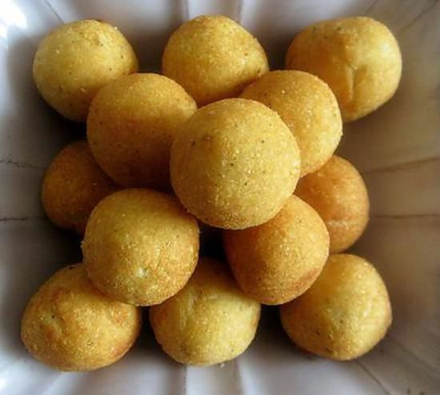

Pommes Noisettes Recipe

Method
- Wash, peel and rewash the potatoes.
- Scoop out balls with a noisette spoon. Blanch the balls in boiling salted water.
- Cook in a little oil in a saute pan or frying pan. Colour on top of the stove, add butter and finish cooking in the oven at 230-250C till cooked.
- Enjoy!